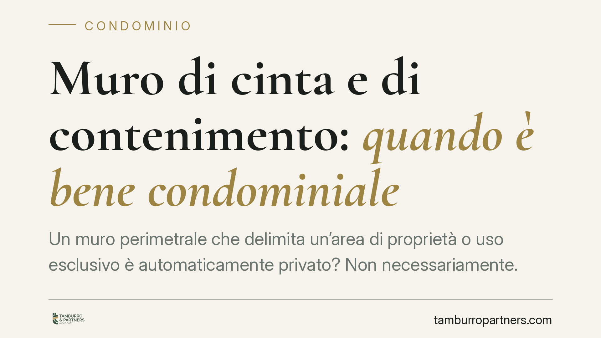

Muro di cinta e di contenimento: quando è bene condominiale
Un muro perimetrale che delimita un'area di proprietà o uso esclusivo è automaticamente privato? Non necessariamente. Secondo l'orientamento consolidato della Cassazione, ciò che conta è la funzione del manufatto: se il muro contiene il terreno e assicura la stabilità dell'edificio, è bene comune ex art. 1117 c.c. Con rilevanti conseguenze su manutenzione e ripartizione delle spese.

Il caso tipico
La questione ricorre spesso nei condomìni con aree esterne: un muro perimetrale delimita un giardino, un cortile o un parcheggio assegnato in uso esclusivo a un singolo condòmino. Chi deve pagarne la manutenzione? Il proprietario dell'area che il muro delimita, oppure la collettività condominiale?
La risposta non dipende da dove si trova il muro, né da chi usa l'area che esso racchiude. Dipende dalla sua funzione. È questo il criterio che la giurisprudenza di legittimità applica in modo costante.
Inquadramento normativo
L'art. 1117 cod. civ. elenca le parti dell'edificio presuntivamente comuni: tra queste, al n. 1, i muri maestri, cioè gli elementi strutturali che svolgono funzione portante o di contenimento. L'articolo non menziona testualmente i «muri di cinta»: la loro eventuale condominialità è frutto dell'interpretazione giurisprudenziale dell'art. 1117 c.c. letto in combinato con la funzione concretamente svolta dal manufatto.
Da qui la distinzione operativa consolidata:
- il muro di contenimento, che sostiene il terreno e concorre alla stabilità dell'edificio o delle aree comuni, rientra tra i beni condominiali, a prescindere dall'uso esclusivo dell'area che delimita;
- il muro di mera divisione interna, privo di funzione strutturale e destinato solo a separare porzioni private, può restare di proprietà esclusiva.
La presunzione di condominialità dell'art. 1117 c.c. opera salvo titolo contrario. Chi sostiene la proprietà esclusiva del muro deve dunque provarla, producendo un atto di acquisto, un regolamento contrattuale o altro titolo idoneo a superare la presunzione legale. L'onere della prova grava su chi invoca la deroga, non sul condominio.
Spese urgenti e rimborso
Un secondo profilo riguarda chi anticipa i costi di un intervento urgente. Qui il fondamento normativo è l'art. 1134 cod. civ.: il condòmino che sostiene spese per le cose comuni senza autorizzazione dell'amministratore o dell'assemblea ha diritto al rimborso solo se l'intervento era urgente, cioè non differibile senza rischio di danno.
Ne discende che il condòmino il quale, di fronte a un cedimento imminente del muro di contenimento, interviene per evitare crolli o danni, può pretendere il rimborso dal condominio, purché dimostri sia l'urgenza sia l'interesse comune dell'opera. Un intervento meramente opportuno, ma rinviabile, non dà invece diritto al rimborso automatico.
Implicazioni pratiche
Per l'amministratore e i condòmini le conseguenze sono concrete:
- la manutenzione del muro di contenimento ricade sul condominio e le spese si ripartiscono secondo le quote millesimali, salvo criteri diversi per i beni a uso differenziato;
- l'uso esclusivo dell'area delimitata non trasferisce la proprietà del muro né la responsabilità della sua manutenzione strutturale;
- la natura del manufatto va accertata sulla base di una verifica tecnica, non sulle apparenze o sulla collocazione catastale.
L'errore più frequente è presumere che il muro appartenga a chi gode dell'area recintata. È una lettura semplificata che non regge al criterio funzionale.
Cosa fare in concreto
- Accerta la funzione del muro. Prima di attribuire la spesa, fai verificare da un tecnico se il manufatto ha funzione di contenimento e stabilità o di mera divisione.
- Esamina titolo e regolamento. Controlla atti di acquisto e regolamento condominiale di natura contrattuale: solo un titolo idoneo può derogare alla presunzione dell'art. 1117 c.c.
- Documenta l'urgenza. Se intervieni di tua iniziativa su un bene comune, raccogli prove dell'urgenza (relazioni, fotografie, comunicazioni) per far valere il rimborso ex art. 1134 c.c.
- Convoca l'assemblea. Per interventi non urgenti, porta la questione in assemblea e delibera ripartizione e modalità prima di avviare i lavori.
- Conserva la documentazione tecnica. In caso di contenzioso, la prova della funzione del muro è decisiva: perizie e elaborati vanno archiviati con cura.
Un orientamento stabile
Il criterio funzionale non è una novità: la Cassazione lo applica da tempo per distinguere i muri di contenimento, comuni, dai muri meramente divisori. Il punto fermo resta la verifica caso per caso, perché la qualificazione dipende dalla concreta funzione del manufatto e dall'eventuale titolo contrario.
Contributo informativo a cura di Tamburro & Partners Avvocati. Non costituisce parere legale.
Ogni condominio ha una storia a sé.
Se gestisci un'amministrazione e vuoi un confronto su una specifica questione condominiale, scrivi allo studio. Ti rispondiamo entro un giorno lavorativo.